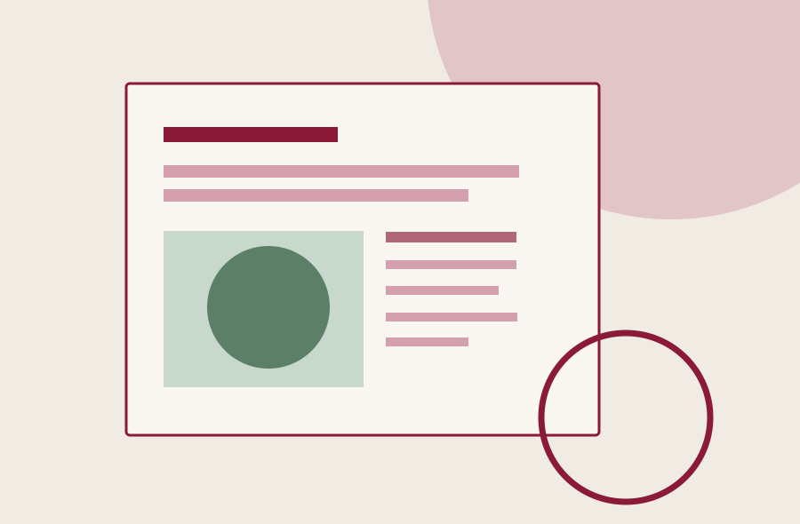
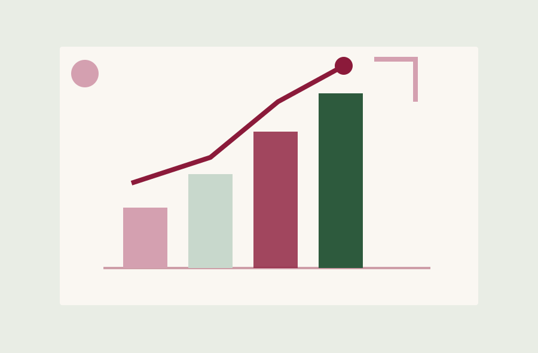

Glide SMM / ЖурналНе просто новини.
Не просто новини.
Робота за кадром.
Стратегія, інсайти, рішення команди й новини проєктів. Ділимося тим, що стоїть за результатами в соціальних мережах.
Матеріали блогу
Думки · Практика · ОновленняЧитайте статті про стратегічний SMM та життя студії. Кожен матеріал відкривається на окремій сторінці.

Новини студії
Що буде в блозі Glide SMM Studio
Новини команди, професійні спостереження та оновлення проєктів. Пояснюємо, навіщо створюємо цей простір.
Читати статтю
SMM-стратегія
Чому SMM починається з дослідження, а не з контент-плану
Які питання варто з’ясувати про бізнес, продукт і аудиторію до того, як планувати публікації.
Читати статтю
Робота з проєктами
Навіщо публікувати оновлення до кейсів
Великий кейс фіксує результат за період, а короткі новини допомагають показати розвиток роботи з клієнтом.
Читати статтю